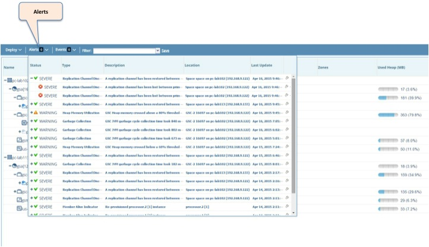
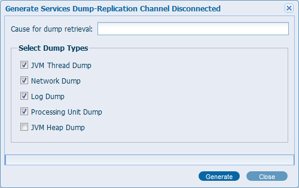

You can view alerts in the Web Management Console Alerts panel, displayed by
The Web Management Console server utilizes the
Alerts are grouped together by type, such as CPU, Memory, etc. When an alert is raised, it is aggregated with other consecutive alerts of the same type. Previous alerts from the aggregation get "pushed" down (circled in red). A resolved alert "closes" the aggregation (circled in green). A new alert of the same type will trigger a new aggregation.
Sort the "status' column in ascending order to show the latest unresolved alerts.

A logs dump can be retrieved for the alert's related grid components. This can be done by opening the Alert Actions menu and clicking "Generate dump", after which, a window will appear providing configuration of the dump:

Select the desired components for the dump and click "Generate", and a zip file will be downloaded containing log files for each of the selected components.